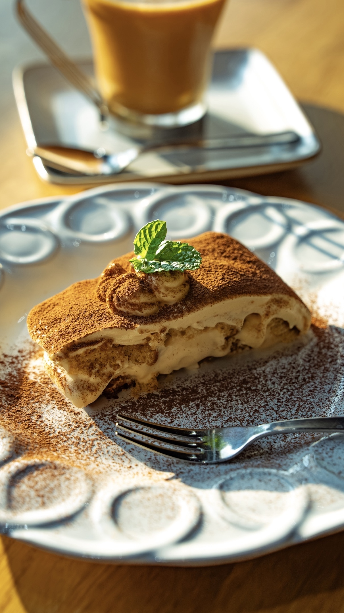
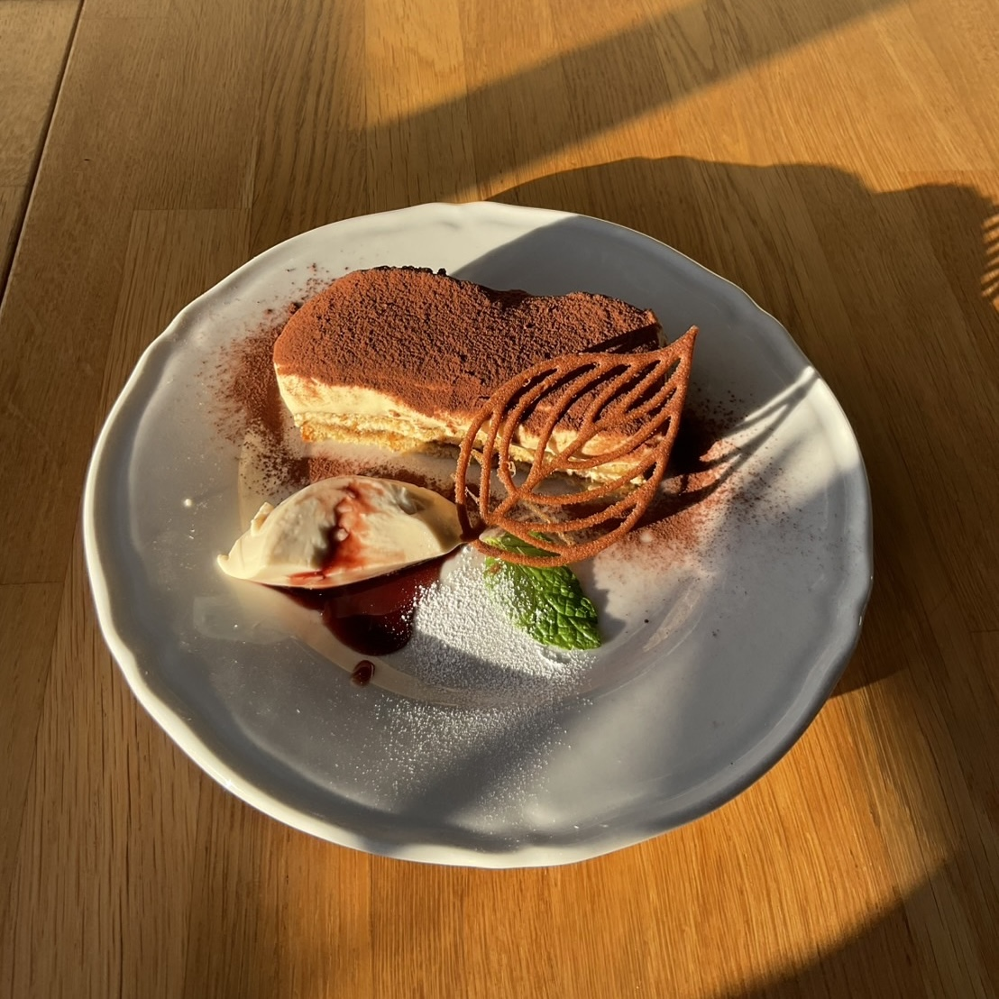
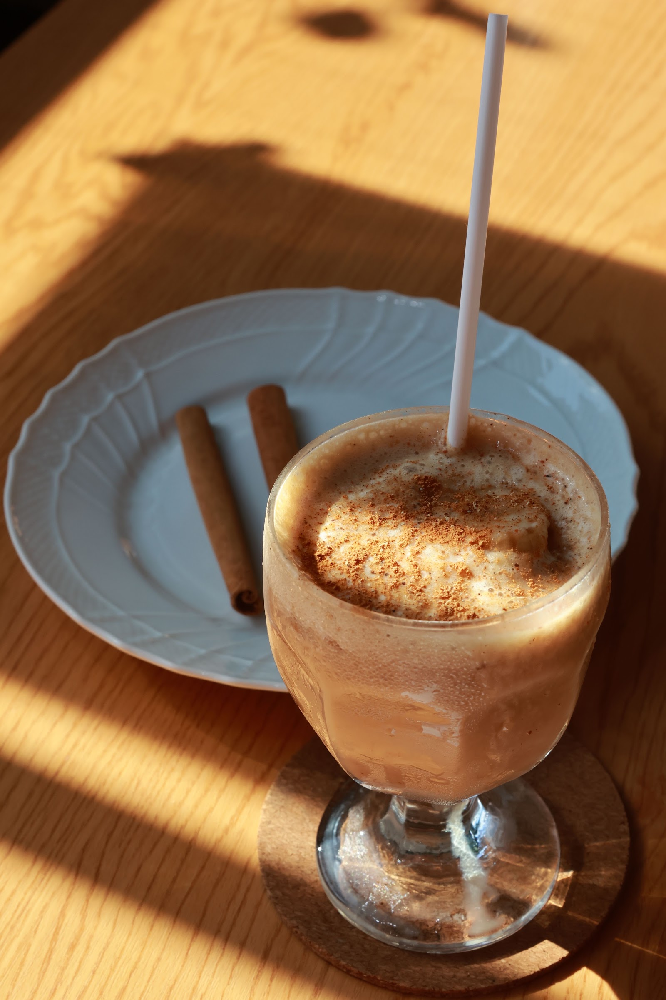
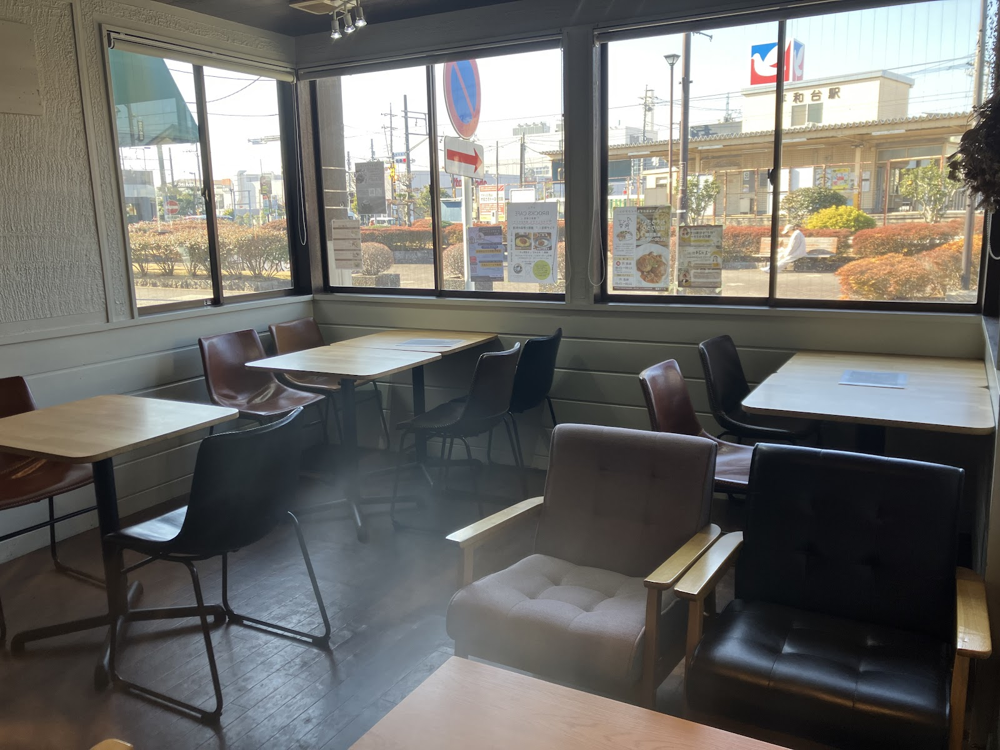

お店について
平和台駅の目の前で、自家製ティラミスと本格チャイを。
ティラミスとチャイ、ふたつの専門店として
キミとティラミス You&Tiramisu 流山は、その名の通りティラミスとチャイの2つを主役にした専門店です。ベースのクリームは甘さを控えめに仕立て、コクと軽やかさのバランスにこだわって手作りしています。季節ごとには、苺や桃を使った期間限定フレーバーも登場し、その時々でしか出会えない味わいをお楽しみいただけます。
チャイは、生姜やナツメグを含む複数のスパイスをブレンドした本格派。温かいものと冷たいもの、どちらもご用意していますので、季節や気分に合わせてお選びいただけます。
また、ランチタイムには手作りのパニーニやパスタもご用意しています。ティラミスとチャイだけでなく、軽い食事もあわせて楽しんでいただけるのも、キミとティラミスの魅力のひとつです。

写真: キミとティラミス You&Tiramisu 流山（Googleマップ）

写真: キミとティラミス You&Tiramisu 流山（Googleマップ）

写真: キミとティラミス You&Tiramisu 流山（Googleマップ）
流鉄流山線 平和台駅の目の前で
当店は、流鉄流山線「平和台駅」の目の前、駅を出て徒歩30秒という好立地にあります。窓際の席に座ると、レトロな車両が行き交う様子を眺めることができ、電車がお好きな方にもゆっくりくつろいでいただける眺めです。
店内は落ち着いた雰囲気で、慌ただしい日常から少し離れて過ごせる時間を大切にしています。おひとりでの読書やちょっとした休憩はもちろん、ご友人やご家族との会話を楽しみながらティラミスとチャイを味わうのにも適した空間です。

写真: キミとティラミス You&Tiramisu 流山（Googleマップ）
こだわりポイント
- 甘さ控えめでコクのある自家製ティラミス
- 複数のスパイスを使った本格チャイ（温冷両対応）
- ランチには手作りのパニーニ・パスタも
- 季節ごとに変わる限定フレーバー（苺・桃など）
- お客様との会話を大切にした、温かい接客